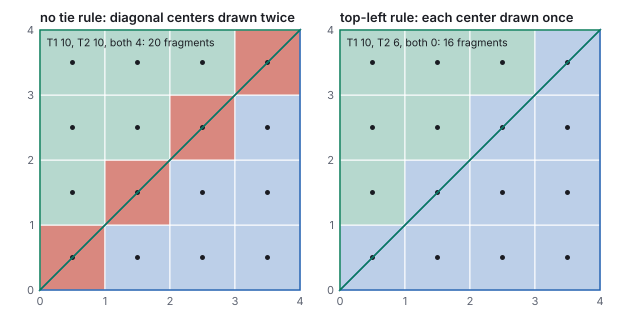
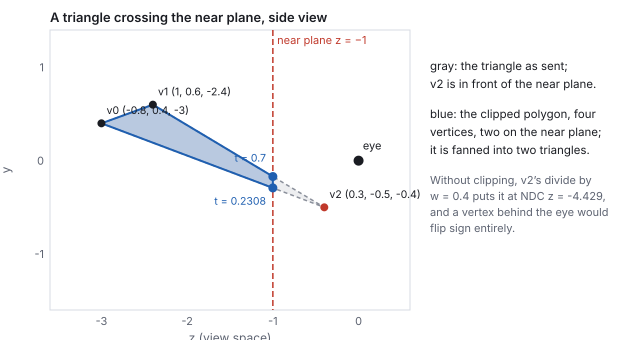
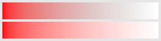
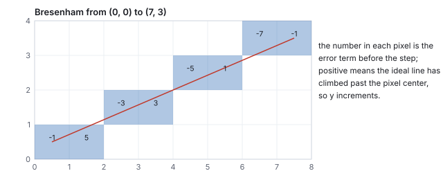

This chapter links to the course’s interactive demos and uses MathJax for its formulas. Read it through the course website (or download the file and open it in a browser); a Canvas inline preview will reach neither the demos nor the math. All chapters.
Rasterization and the GPU Pipeline
After projection a triangle is three points on the image plane, and a screen is a grid of pixels. Rasterization bridges the two: for every pixel, test its center against the triangle’s three edges, and if it is inside, blend the corner attributes to shade it. Three edge functions do the test and, normalized, are the blending weights. This chapter works one pixel by hand, then works the machinery around that pixel: how the three functions are stepped across a bounding box in fixed-point arithmetic, why a pixel whose center lies exactly on an edge shared by two triangles must be given to exactly one of them, what the clipper does to a triangle that pokes through the near plane, why edges stair-step, how the depth buffer decides which of two overlapping triangles wins and how rejecting a fragment before shading it saves the shading, why attributes must be interpolated in \(1/w\), how two transparent fragments combine and why a texture must carry premultiplied alpha, and how a line was drawn before there were triangles. It closes with the fixed and programmable stages of a GPU, the deferred and tile-based variants of the pipeline, and the frame loop.
- Edge functions: is the pixel inside?
- Triangle setup: the bounding box, increments, fixed point
- Shared edges: the top-left rule
- Barycentric coordinates: what color is it?
- Clipping at the near plane
- Aliasing and supersampling
- The depth buffer
- Early z and overdraw
- Perspective-correct interpolation
- Blending: the over operator and premultiplied alpha
- Lines: Bresenham
- The GPU pipeline
- Deferred and tile-based pipelines
- The frame loop, the framebuffer, and the budget
- Hands-on
- Exercises
1 · Edge functions: is the pixel inside?
This is the which-side test of the vectors chapter, in two dimensions, three times. It is also linear in \(\mathbf{p}\), so stepping one pixel to the right adds a constant to each edge function: a rasterizer evaluates three additions per pixel, which is why the operation could be frozen into silicon (Pineda, 1988).

| \(E_{12}\) | \((0.361 - 0.877)(0.542 - 0.479) - (0.858 - 0.479)(0.458 - 0.877) = -0.0325 + 0.1589 = 0.1264\) |
| \(E_{20}\) | \((0.242 - 0.361)(0.542 - 0.858) - (0.143 - 0.858)(0.458 - 0.361) = 0.0376 + 0.0696 = 0.1072\) |
| \(E_{01}\) | \((0.877 - 0.242)(0.542 - 0.143) - (0.479 - 0.143)(0.458 - 0.242) = 0.2534 - 0.0730 = 0.1804\) |
2 · Triangle setup: the bounding box, increments, fixed point
A rasterizer does not test all 144 pixels. Triangle setup computes, once per triangle, everything the per-pixel loop needs: the bounding box of the three vertices, clamped to the screen, so that only its pixels are visited; the three edge functions at the box’s first pixel center; and the amount each edge function changes per step in \(x\) and in \(y\), which are just the coefficients of the linear form.
| edge | \(\partial E/\partial x\) | \(\partial E/\partial y\) |
|---|---|---|
| \(E_{12}\) | \(-4.548\) | \(-6.192\) |
| \(E_{20}\) | \(8.580\) | \(-1.428\) |
| \(E_{01}\) | \(-4.032\) | \(7.620\) |
Hardware does this in fixed point: vertex positions are snapped to a grid of \(1/256\) pixel (8 sub-pixel bits; 4 was the old standard), so that every edge function is an integer and the additions can never accumulate rounding error across a row. The demo’s vertices snap to \((743, 439)\), \((2694, 1471)\) and \((1109, 2636)\) in units of \(1/256\) pixel, and its twice-area changes from \(59.622\) to \(59.641\) pixels squared: a snap of at most half a sub-pixel moves each vertex by at most \(0.002\) pixel, invisible, and buys exact arithmetic. For a \(2048\times2048\) screen an edge function needs \(38\) bits, which is why rasterizers keep a guard band (Section 5) rather than accept arbitrary coordinates.
3 · Shared edges: the top-left rule
Two triangles that share an edge share the pixel centers that lie exactly on it, and “exactly on” happens constantly in fixed point: a diagonal through a grid of pixel centers hits one per row. If both triangles draw such a pixel, an opaque mesh draws it twice (harmless, but wasteful) and a transparent one blends it twice (visible: a bright seam). If neither draws it, there is a hole. The rasterizer needs a tie rule that assigns every point of the plane to exactly one triangle.

4 · Barycentric coordinates: what color is it?
The three edge functions are not just a test. Divided by twice the triangle’s area they are the point’s barycentric coordinates, the weights that express \(\mathbf{p}\) as a blend of the corners:
\[ w_0 = \frac{E_{12}(\mathbf{p})}{E_{01}(\mathbf{v}_2)}, \quad w_1 = \frac{E_{20}(\mathbf{p})}{E_{01}(\mathbf{v}_2)}, \quad w_2 = \frac{E_{01}(\mathbf{p})}{E_{01}(\mathbf{v}_2)}, \qquad w_0 + w_1 + w_2 = 1, \quad \mathbf{p} = w_0\mathbf{v}_0 + w_1\mathbf{v}_1 + w_2\mathbf{v}_2 . \]
5 · Clipping at the near plane
The edge functions assume the triangle has three finite screen positions. A vertex behind the eye has negative \(w'\), and dividing by it flips its projected position to the opposite side of the screen; a vertex at the eye has \(w' = 0\) and no position at all. Triangles that cross the near plane must therefore be cut before the divide, in clip space, where the near plane is the linear condition \(z + w \ge 0\) (NDC \(z \ge -1\) after the divide, as in the viewing chapter).

Only the near plane truly needs geometric clipping. The side planes can be replaced by a guard band: the rasterizer’s fixed-point coordinates cover a region several times larger than the screen, triangles are allowed to extend into it, and the bounding box clamp of Section 2 simply never visits the off-screen pixels. Triangles larger than the guard band are rare and are clipped geometrically. The far plane needs no clipping either if the depth test is allowed to clamp, and a projection with the far plane at infinity removes it altogether.
6 · Aliasing and supersampling
A pixel is filled or not; nothing in between. So a straight edge that crosses pixels at an angle becomes a staircase, and a moving edge’s staircase crawls. This is the aliasing of the antialiasing chapter: the grid samples the true shape at one point per pixel and cannot represent the edge’s exact position. The coverage the grid reports is wrong in the same way: at \(12\times12\) the triangle covers 19.4 % of the pixels against a true area of 20.7 %, and only at \(256\times256\) does the count converge.

7 · The depth buffer
Nearer surfaces must hide farther ones. Sorting triangles does not work in general (they can interpenetrate or form a cycle), so the decision is made per pixel: beside the color the framebuffer keeps, a second buffer keeps the depth of the nearest thing drawn so far at each pixel.

Two consequences. Equal depths go to whichever came first, so two coplanar surfaces flicker (“z-fighting”); the fix is to offset one or to keep the near plane far enough out that depth precision is not wasted, as the viewing chapter quantifies. And the test only makes sense for opaque fragments; transparent ones must be blended in back-to-front order after the opaque pass (Section 10), because a discarded fragment cannot contribute a tint.
8 · Early z and overdraw
The depth test sits after the fragment shader in the pipeline diagram, and a fragment that fails it has been shaded for nothing. Hardware therefore runs the test before shading whenever it can (early z), which is whenever the shader does not itself write depth or discard fragments; a coarse version, hierarchical z, keeps the nearest depth of each tile of pixels and rejects whole tiles of a distant triangle in one comparison. What is saved is the shading of hidden fragments, the overdraw.
9 · Perspective-correct interpolation
Barycentric weights computed on the screen interpolate linearly in screen space. But a triangle’s attributes vary linearly in world space, and perspective is not linear: the divide by depth compresses the far half of a receding edge into a small part of the screen. Interpolating a texture coordinate with screen-space weights therefore pulls the far texture toward the near end, the classic warped floor of early 3D games.

| screen-linear | \(u = \tfrac12\cdot0 + \tfrac12\cdot1 = 0.5\), wrong |
| \(1/w\) | \(\tfrac12\cdot\tfrac11 + \tfrac12\cdot\tfrac15 = 0.6\), so the depth there is \(1/0.6 = 1.667\) |
| \(u/w\) | \(\tfrac12\cdot\tfrac01 + \tfrac12\cdot\tfrac15 = 0.1\) |
| correct \(u\) | \(0.1/0.6 = 0.167\) |
10 · Blending: the over operator and premultiplied alpha
A fragment that passes the depth test replaces the stored color, unless blending is on, in which case it is combined with it. The combination for a partly transparent surface is Porter and Duff’s over operator (1984), with \(\alpha\) the fragment’s coverage or opacity:

Blending must be done in linear light, not on encoded values, for the reasons the color chapter works through; the hardware blend unit operates on whatever the framebuffer format holds, so an sRGB framebuffer is declared as such and decoded on the way in. Additive blending (\(C_{\text{src}} + C_{\text{dst}}\), for fire and glows) and multiplicative blending (for shadows and tints) are the same unit with other factors, and all of them read the destination, which is why a blended pass cannot use early z to skip anything.
11 · Lines: Bresenham
Before triangles there were lines, on plotters and vector displays, and the algorithm that drew them (Bresenham, 1965) is the first rasterizer: which pixels approximate a segment from \((x_0, y_0)\) to \((x_1, y_1)\), using only integer additions. For a shallow line, step \(x\) by one each time and decide whether \(y\) steps, keeping an integer error term that tracks how far the ideal line has drifted from the current row.

A modern GPU draws a line as a thin quad, two triangles of the line’s width, through the ordinary triangle rasterizer; Bresenham survives in software rasterizers, in two-dimensional graphics libraries, and as the reason the term “raster” means a grid walked one step at a time.
12 · The GPU pipeline
By the mid-1980s the steps that turn a scene of triangles into pixels were settled, and they were cast into hardware as a fixed assembly line; since about 2001 two of the stations run user code. A GPU is this sequence built as silicon: hardware shaped like the algorithm.

| stage | what it does | chapter |
|---|---|---|
| vertex shader | per vertex: \(M\), \(V\), \(P\); outputs clip coordinates and the attributes to interpolate | affine, scene graphs, viewing |
| clip, divide, viewport | cut triangles at the near plane (Section 5), divide by \(w'\), map to pixels; cull back faces by the sign of the twice-area | viewing, this chapter |
| rasterize | setup, edge functions per pixel, the tie rule, barycentric weights, perspective-correct interpolation | this chapter |
| fragment shader | per covered sample: texture lookups, lighting, the color | texture mapping, illumination |
| depth test and blend | z-buffer compare (early when possible); blend with what is there | this chapter |
| framebuffer | the color per pixel the monitor scans out, encoded as the color chapter describes | this chapter |
Three more programmable stages exist and are optional. Tessellation shaders sit after the vertex shader and subdivide a patch into triangles on the GPU, which is how the Bézier patches and subdivision surfaces of the curves chapter reach the rasterizer at a resolution chosen per frame. A geometry shader can emit or discard whole primitives (rarely used now; its successor, the mesh shader, builds triangle lists from arbitrary data). And compute shaders run outside the pipeline entirely, on the same cores, for anything that is not drawing: culling, particle simulation, the post-processing of tone mapping.
The economics that shaped it: every stage is embarrassingly parallel (vertices do not depend on one another, nor do pixels), so the machine is thousands of small cores running the same program on different data. A vertex shader runs once per vertex; a fragment shader runs once per covered sample, typically millions of times per frame, which is why per-pixel work is the cost that matters.
13 · Deferred and tile-based pipelines
The pipeline above shades a fragment as soon as it is rasterized, which is forward shading. Two rearrangements are common. Deferred shading rasterizes the scene once into a G-buffer, several framebuffers holding each pixel’s position or depth, normal, base color and material parameters, and then lights the G-buffer in a second pass, once per pixel, with no overdraw and with every light applied only to the pixels it reaches. Tile-based rendering, the design of every mobile GPU, splits the screen into tiles of \(16\times16\) or \(32\times32\) pixels, bins the triangles by tile, and rasterizes one tile at a time in on-chip memory, so that the depth test, blending and the resolve of multisampling never touch external memory.
14 · The frame loop, the framebuffer, and the budget
Interactive graphics is a loop: read the input, update the model, run the whole pipeline, present the result, again. Nothing can be precomputed because the viewer can act at any moment. The result of each lap lives in the framebuffer, one color per pixel, which the monitor reads top to bottom sixty times a second.

The loop is also the shape of the course’s programs: one model (a handful of numbers), a controller that writes it (sliders, keys, a mouse), and views that are pure functions of it (a 3D scene, a matrix panel). No view owns state; the model drives the matrices, never the reverse. Every demo in this text is built that way, and so is every studio project; the interaction chapter takes the loop apart, including how many of these laps pass between a click and the pixel that shows it.
15 · Hands-on
css551/ directory.
-
The edge functions and weights of pixel \((5, 6)\), Section 1, in six lines.
node -e "const E=(a,b,p)=>(b[0]-a[0])*(p[1]-a[1])-(b[1]-a[1])*(p[0]-a[0]); const v=[[0.242,0.143],[0.877,0.479],[0.361,0.858]], p=[5.5/12, 6.5/12]; const e=[E(v[1],v[2],p), E(v[2],v[0],p), E(v[0],v[1],p)], A=E(v[0],v[1],v[2]); console.log(e.map(x=>+x.toFixed(4)), 'area2', +A.toFixed(4), 'weights', e.map(x=>+(x/A).toFixed(3)));"
Prints[0.1263, 0.1072, 0.1805] area2 0.414 weights [0.305, 0.259, 0.436](the last digit of two edge values differs from the text’s because the text rounds the corners to three decimals first). Changepto[1.5/12, 9.5/12]and one value goes negative. -
Bresenham’s line of Section 11, as a loop.
node -e "let e=2*3-7, y=0, out=[]; for (let x=0; x<=7; x++) { out.push(x+','+y); if (e>0) { y++; e+=2*(3-7); } else e+=6; } console.log(out.join(' '))"Prints0,0 1,0 2,1 3,1 4,2 5,2 6,3 7,3. -
The near-plane crossing parameter of Section 5 from the clip-space \(z + w\) values.
node -e "const d1=3.2, d2=-1.3714, d0=4.5714; console.log(+(d1/(d1-d2)).toFixed(3), +(d2/(d2-d0)).toFixed(4))"
Prints0.7 0.2308. - In the raster demo, set the resolution to \(12\) and count the filled pixels: 28. Rotate the triangle a few degrees and count again; the count changes by one or two while the true area does not. Set the resolution to \(64\) and the count settles near \(20.7\) % of \(4096\), about \(848\).
16 · Exercises
Solution
Twice the area \(E_{01}(\mathbf{v}_2) = 4\cdot4 - 0 = 16\) (counter-clockwise). For \((1,1)\): \(E_{01} = 4\cdot1 - 0 = 4\), \(E_{12} = (0-4)(1-0) - (4-0)(1-4) = -4 + 12 = 8\), \(E_{20} = (0-0)(1-4) - (0-4)(1-0) = 4\); all positive, inside, with weights \((0.5, 0.25, 0.25)\). For \((3,2)\): \(E_{12} = (-4)(2) - (4)(3 - 4) = -8 + 4 = -4 < 0\): outside (it is past the hypotenuse, since \(3 + 2 > 4\)).Solution
\(0.5(0,0) + 0.25(4,0) + 0.25(0,4) = (1, 1)\). Depth \(0.5\cdot2 + 0.25\cdot6 + 0.25\cdot10 = 5\).Solution
\(\partial E_{ab}/\partial x = -(b_y - a_y)\): \(E_{01}\): \(0\); \(E_{12}\): \(-(4 - 0) = -4\); \(E_{20}\): \(-(0 - 4) = 4\). From \((E_{12}, E_{20}, E_{01}) = (8, 4, 4)\) at \((1,1)\): \((4, 8, 4)\) at \((2, 1)\). Check directly: \(E_{12}(2,1) = (0-4)(1-0) - (4-0)(2-4) = -4 + 8 = 4\). The increments sum to zero.Solution
Centers with \(x + y = 4\): \((0.5, 3.5), (1.5, 2.5), (2.5, 1.5), (3.5, 0.5)\). In the first triangle the shared edge runs \((4,0)\to(0,4)\), upward, not top-left; in the second it runs \((0,4)\to(4,0)\), downward, a left edge. The second triangle draws all four: it covers 10 of the 16 pixels and the first covers 6, the mirror image of Section 3’s count.Solution
Each pixel is counted whole or not at all by where its single center falls; edge pixels that are mostly covered but whose center is outside are lost, and mostly-empty ones whose center is inside are gained. Which dominates depends on where the edges fall, so the error has either sign. Sixteen samples per pixel count fractional coverage, and the error shrinks with the sample count; here it reaches the true 20.7 % at \(12\times12\).Solution
For the \(P\) with near 1 and far 8, \(z_{\text{clip}} = -1.286\,z - 2.286\) and \(w = -z\): at \(z = 0.4\), \(z_{\text{clip}} = -2.800\), \(w = -0.4\), \(z + w = -3.2\), outside. \(t = 3.2/(3.2 + 3.2) = 0.5\): the crossing is now halfway along the edge. Unclipped, dividing by \(w = -0.4\) negates every coordinate: the vertex would project to the opposite side of the screen and behind the far plane, and the triangle would fill the wrong region of the image.Solution
After B, the overlap column \(x = 2\) holds 0.2 and column \(x = 3\) holds 0.3. A’s depth 0.3 is not less than 0.2 at \(x = 2\) (rejected, 3 fragments) and not less than 0.3 at \(x = 3\) (rejected, 3 fragments); at \(x = 1\) and at \(y = 1\) there is no contest and A draws. The final picture is the same as before except at \(x = 3\), where the tie now goes to B: equal depths are decided by drawing order, which is the origin of z-fighting.Solution
The edge midpoint in the world is \((x, z) = (0, -3)\), which projects to screen \(x = 0/3 = 0\). Screen \(x\) runs from \(-1\) to \(0.2\), so \(u = 0.5\) sits at \(t = 1/1.2 = 0.833\) of the screen span: five-sixths of the way across, not half.Solution
const over=(s,a,d)=>d.map((c,i)=>a*s[i]+(1-a)*c); let c=[0,0,0]; for (const L of [[1,0,0],[0,1,0],[0,0,1]]) c=over(L,0.5,c); console.log(c) gives \((0.125, 0.25, 0.5)\): the last layer drawn dominates. Reversing the order gives \((0.5, 0.25, 0.125)\). The nearest transparent surface must be drawn last, so back-to-front sorting is not optional.